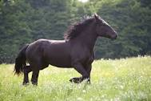

El caballo es un mamífero perisodáctilo domesticado de la familia de los équidos. Es un herbívoro perisodáctilo de gran porte, cuello largo y arqueado, poblado por largas crines. A la hembra del caballo se le llama yegua y a las crías si son machos potros o potrillos, y si son hembras potras o potrancas. Wikipedia
